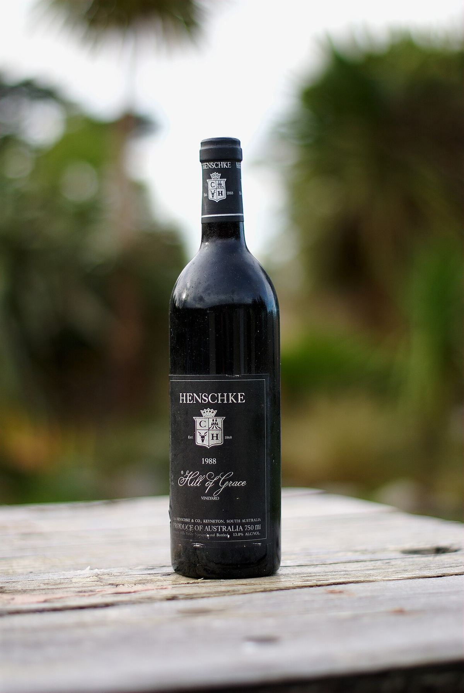

ROSSO

La Eden Valley occupa le colline orientali della Barossa, a un’altitudine superiore rispetto al fondovalle. Il suo clima più fresco dà Riesling di grande finezza e Shiraz eleganti, tra cui alcuni dei rossi più celebri d’Australia.

La Eden Valley si trova nelle Barossa Ranges, a est della Barossa Valley, con la quale forma la zona vitivinicola della Barossa. Nel 1847 Joseph Gilbert, colono inglese, piantò viti a Pewsey Vale, uno dei primi vigneti della zona. Poco dopo arrivarono famiglie di origine slesiana e prussiana che si stabilirono intorno a località come Eden Valley, Springton, Keyneton o Flaxman Valley. Tra loro c’era la famiglia Henschke, la cui cantina di Keyneton è diventata una delle più prestigiose del paese grazie a vini come Hill of Grace e Mount Edelstone, provenienti da vigneti di Shiraz molto antichi.
Per buona parte del Novecento la regione fu nota soprattutto come fonte di Riesling per le grandi aziende della Barossa. Negli anni Sessanta furono piantati vigneti emblematici nelle zone più alte, come il vigneto Steingarten, su un pendio sassoso vicino al confine con la Barossa, che mostrò il potenziale del Riesling alle quote più elevate.
I vigneti si trovano in genere tra 400 e 600 metri di altitudine, in un paesaggio di colline ondulate con pascoli, boschi di eucalipti e affioramenti rocciosi. Il clima è nettamente più fresco rispetto al fondovalle della Barossa, con notti fredde, più pioggia e un ciclo di maturazione più lungo, che favorisce l’acidità e la finezza aromatica. La sottoregione di High Eden comprende alcuni dei vigneti più alti. I suoli sono poveri e sassosi, formati da rocce metamorfiche e granitiche alterate, con sabbie, ghiaie, quarzo e argille in profondità, e tendono a limitare il vigore della vite.
Il Riesling è il bianco simbolo: secco, delicato, con aromi di lime, fiori d’arancio e fiori bianchi e un’acidità salda che gli consente di invecchiare per molti anni e sviluppare note tostate. Viene spesso paragonato a quello di Clare, anche se è descritto di frequente come un po’ più floreale e fine. Lo Shiraz dà rossi di medio corpo, più speziati e freschi di quelli della Barossa, con frutto rosso e nero e tannini fini. Si coltivano anche Chardonnay, Cabernet Sauvignon e Viognier, vitigno rilanciato in Australia proprio in questa zona. Molti vini portano il nome Eden Valley, ma le uve della regione sono usate anche in assemblaggi con la menzione Barossa.
